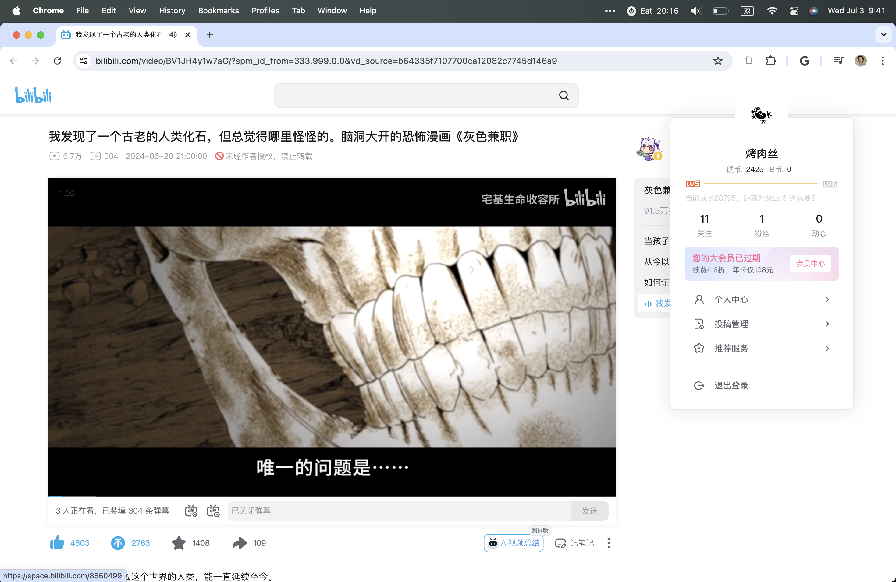

Ongoing Journey - June 2024
Discountine & Picking Back up
This was the last image I took, I am level 6 after 7 years at Bilibili hahahAlong with the pause of blog, this April I’ve stopped adding photos to my daily photo album.
I am still early in my years? I’ve found myself often off in estimating events longer than a week. Things that I am confident would go for a long time didn’t last as long, vise versa.
A good reminder that it’s alright to put things down and take a break, let my body catch up to my mind. I’ve recently started using Things to manage my todos again, felt my life is back in order again.
College Graduation, House, Fence and Door
College graduation ceremony :)Another life update is college graduation, compare to highschool graduation I am still searching for a job.
Reflection I made with my dad - imagen every field as a house with a fence (entry) and a door (being good), some field has a low fence & thin door (the ‘burger flipper’ jobs), some has high fence & thin door (doctors for example), PM roles tends to have a low fence & thick door, easy to get in but hard to master.
It’s a humbling experience
Why?
The most frequent reply I get from Tilly for the past 10 month was ‘why?’
I am coming to SF in about a week
Why?
Wanna go out for dinner tonight?
Why?
…
Until a fews days ago I saw ‘Scientists have been communicating with apes via sign language since the 1960s; apes have never asked one question‘, link here.
🙊🙈🙉
I very rarely ask ‘why’, not even to myself. Part of me thinking being submissive makes me thinks about ‘what to do’ with the situation more, part of me thought about being a good PM is to understand
In HCI there is this term called asking 5 whys to get deep enough to understand the root of the problem, plan to be more curious with the things I experience now.
Most recent rabbithole that I got into is how to term books into ebooks, and currently the best tool I found is good doc lol.